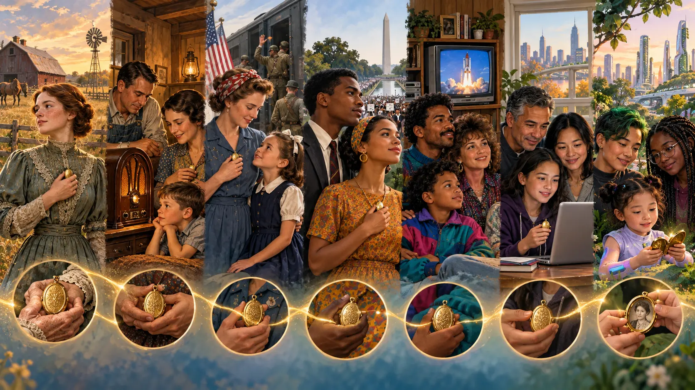
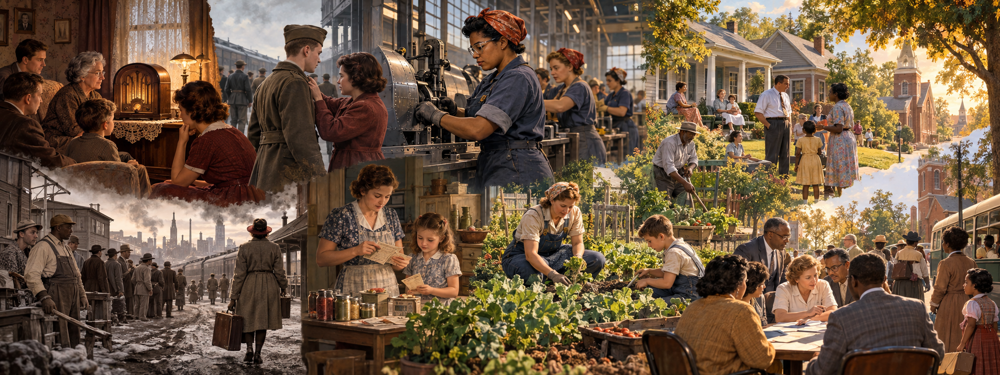
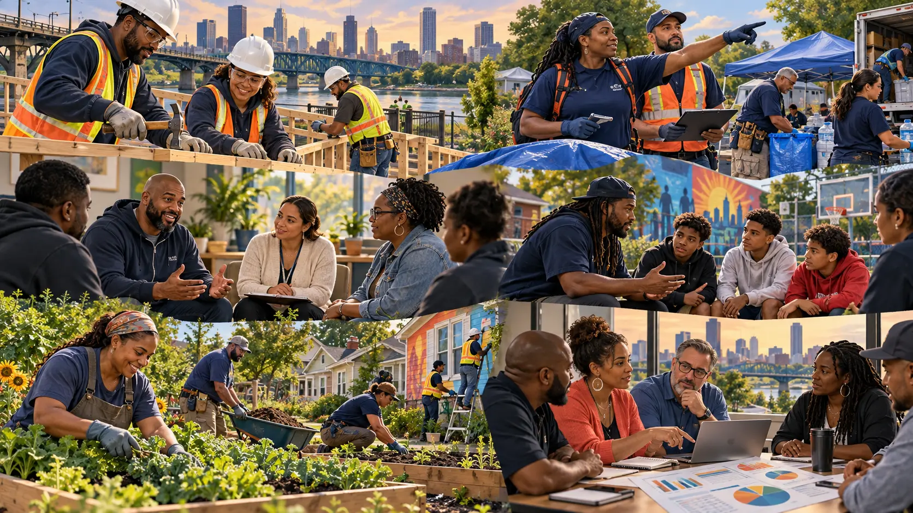

Synthesize sociology
Connect biography, history, culture, socialization, deviance, institutions, inequality, and change.
Eleanor’s descendants inherit more than a family history. They inherit the ability—and responsibility—to see connections and test better ways of living together.
Connect biography, history, culture, socialization, deviance, institutions, inequality, and change.
Translate theory into a voluntary, paid, ethical reentry and community-safety program.
Distinguish a hopeful claim from evidence that a program works.
Separate the family’s fictional future from historical facts and verified precedents.

Eleanor Smith Kensington was born in 1879, when railroads compressed distance and electric systems were beginning to reorganize daily life. Her descendants lived through radio, war, television, civil-rights movements, personal computers, networked media, and algorithmic culture. Technology changed quickly. Values, law, opportunity, and institutions often changed more slowly—a pattern sociologists call cultural lag.
In 2026, Eleanor’s fictional descendant, Dr. Nora Kensington-Reed, studies a problem earlier generations experienced in fragments: punishment can remove a person from a community, but release without work, housing, healthcare, trusted relationships, or legal opportunity can return the person to the same pressures. Nora asks: What would change if reintegration were designed as public safety rather than treated as an individual favor?

Eleanor lived from 1879 to 1967. During her lifetime, the United States fought the Spanish–American and Philippine–American wars, World War I, World War II, the Korean War, and the expanding Vietnam War. The two world wars transformed daily life most visibly. Eleanor saw women enter jobs previously reserved largely for men, families use ration books, neighborhoods organize drives and gardens, and communities adjust to absence, grief, migration, and new responsibilities.
News did not arrive through an uninterrupted stream of alerts. Newspapers, newsreels, letters, and scheduled radio broadcasts created pauses that are often absent from twenty-four-hour news and social media. Yet slower communication did not prevent fear or sudden changes in perceived reality. In 1938, listeners who entered Orson Welles’s War of the Worlds after its introduction could mistake parts of the fictional broadcast for breaking news. Some listeners became frightened, although later research showed that newspapers greatly exaggerated the scale of a nationwide panic. The episode still demonstrates the Thomas theorem: when people define a situation as real, that definition can produce real consequences.
World War II also introduced a reality that could not be undone by interpretation. The atomic bombings of Hiroshima and Nagasaki revealed that technology could destroy cities with unprecedented speed and created a new awareness of global risk. At the same time, wartime solidarity was never complete or equally available. Racial segregation continued; Japanese Americans were incarcerated by their own government; conscientious objectors and critics faced sanctions; and wartime opportunities did not erase inequality. Sociology therefore asks both how solidarity formed and who was excluded from it.
Read the model carefully: work is one important source of routine, purpose, identity, income, and social ties, but it is not the only source—and not every job supports wellbeing. Family care, education, volunteering, mutual aid, religious life, recreation, unions, neighborhood groups, and civic action can also create belonging. When depression or anxiety interferes with daily life, community participation can complement, but should not replace, appropriate professional care.
Nora designs the Community Restoration Corps, a fictional, voluntary program connecting eligible people returning from incarceration with paid training, stable supports, and community-serving work. It does not excuse harm or force people to disclose trauma. It joins accountability with realistic routes into lawful membership.

Paid apprenticeships in repair, utilities, weatherization, transportation, and public works.
Evacuation support, logistics, cleanup, rebuilding, and neighborhood preparedness under professional supervision.
Qualified peer-support roles, with clinical referral, boundaries, training, and confidentiality.
Credible messengers mediate conflict and connect people leaving gangs with education, work, and safe adults.
Teams restore housing, parks, gardens, and public spaces while earning wages and rebuilding trust.
Independent researchers track benefits, harms, access, participant voice, public cost, and unintended consequences.
| Concept | What it reveals | Program response |
|---|---|---|
| Sociological imagination | A record is personal history inside labor markets, housing rules, neighborhoods, and policy. | Treat connected barriers rather than biography alone. |
| Anomie and strain | Approved goals remain visible while legitimate routes are blocked. | Build paid routes to income, status, and belonging. |
| Labeling and stigma | A “criminal” master status can overshadow skill and close opportunity. | Use credentials, fair-chance hiring, and respected public roles. |
| Differential association | Definitions, techniques, and justifications are learned in groups. | Create skilled teams and networks rewarding lawful achievement. |
| Social control | Attachment, commitment, involvement, and belief can restrain harm. | Strengthen family ties, work, community participation, and future stakes. |
| Social capital | Networks provide information, trust, referrals, and influence. | Connect participants to unions, colleges, employers, counselors, and civic groups. |
Nora’s hypothesis is that participants offered paid training plus coordinated support will have more stable employment and lower repeat offending than otherwise similar eligible people receiving ordinary reentry services. Her team preregisters measures, obtains ethical review, includes participant advisers, and uses a matched comparison or phased rollout when random assignment would be inappropriate.
Funds, staff, employers, housing links, transportation, childcare, and participant time.
Credentials, placements, hours worked, referrals, infrastructure repaired, and services delivered.
Employment, income, housing, wellbeing, recovery, safety, and recidivism.
Who enters and completes, net public cost, and whether benefits persist.
Policy lesson: Nora does not claim the program “saved millions” until transparent evaluation supports it. Cost-benefit estimates must state the period, included costs, comparison, uncertainty, and who experienced benefits or burdens.
Jane Addams received the Nobel Peace Prize in 1931, and economist and sociologist Emily Greene Balch received it in 1946. In this imagined ending, Nora is described as a third sociologist in that intellectual lineage. This is a storytelling choice, not an official Nobel disciplinary category: their work crosses sociology, economics, social work, activism, and peace studies.
Nora accepts the award with program graduates, survivors, neighborhood leaders, employers, and researchers beside her. The arrangement is symbolic. The program never belonged to one heroic person. Sociology taught her that durable change comes from people, organizations, culture, resources, evidence, and policy acting together.
From Sociological Imagination to Social Change
Connect one personal trouble to three institutions and one historical change.
State who participates, which resources are needed, how power is checked, and one unintended consequence.
Give a hypothesis, comparison strategy, outcome measure, ethical safeguard, and criterion for revision.
sociological imagination · biography · history · social construction · culture · cultural lag · socialization · linked lives · life course
social structure · social institution · interdependence · stratification · power · authority · policy · intended consequence · unintended consequence
anomie · strain · labeling · stigma · master status · differential association · social learning · social control · social capital · recidivism · reentry
hypothesis · operationalization · comparison group · mixed methods · program evaluation · validity · ethics · collective action · social change
Addams, J. (1931). Jane Addams—Facts. NobelPrize.org. https://www.nobelprize.org/prizes/peace/1931/addams/facts/
Balch, E. G. (1946). Emily Greene Balch—Nobel lecture. NobelPrize.org. https://www.nobelprize.org/prizes/peace/1946/balch/lecture/
Dropkick Murphys. (2026). Citizen I.C.E. [Music video]. YouTube. https://www.youtube.com/watch?v=mSrDkRm7_78
OpenStax. (2021). Introduction to sociology 3e. Rice University. https://openstax.org/details/books/introduction-sociology-3e
Huff, C. (2022, November 1). Media overload is hurting our mental health. Monitor on Psychology, 53(8). https://www.apa.org/monitor/2022/11/strain-media-overload
National Park Service. (2024). Japanese American incarceration. https://www.nps.gov/subjects/worldwarii/confinement.htm
National Park Service. (2025). The American home front during World War II: Rationing, recycling, and Victory Gardens. https://www.nps.gov/articles/000/homefront-ration-recycle-garden.htm
Naval History and Heritage Command. (n.d.). Atomic bombs. https://www.history.navy.mil/content/history/museums/nmusn/explore/photography/wwii/wwii-pacific/bombardment-japan/bombs-atomic.html
Schwartz, A. B. (2015). Broadcast hysteria: Orson Welles’s War of the Worlds and the art of fake news. Hill and Wang.
U.S. Department of Veterans Affairs. (2025). America’s wars. https://department.va.gov/americas-wars/
System of a Down. (2001). Prison song [Song]. On Toxicity. American Recordings & Columbia Records.
| College pathway | Section benefit | At work |
|---|---|---|
| 🩺 Health and human services | Connect recovery, trauma, housing, family, work, and access. | Coordinate care without reducing a client to a diagnosis or record. |
| 🧠 Counseling and behavioral health | Understand stigma, identity, social bonds, and context. | Build ethical supports, boundaries, referrals, and realistic plans. |
| ⚖️ Public safety, law, and government | Compare punishment, prevention, fairness, reintegration, and outcomes. | Use evidence, protect rights, monitor discretion, and evaluate policy. |
| 📚 Education and early childhood | See how credentials, labeling, opportunity, and institutions affect life courses. | Create accessible routes and interrupt self-fulfilling labels. |
| 💼 Business, management, and entrepreneurship | Recognize how hiring, networks, training, and stigma shape labor. | Build fair-chance pathways with standards, mentoring, and advancement. |
| 🎨 Arts, communication, and media | Analyze protest music, framing, stereotypes, narratives, and voice. | Separate claims from evidence and represent people accurately. |
| 🔧 Skilled trades | Connect apprenticeship, credentials, safety, teamwork, and infrastructure. | Mentor fairly and translate training into recognized skill. |
| ✂️ Personal-care services | Understand trust, stigma, identity, boundaries, and networks. | Create respectful services, protect privacy, and connect resources. |
| 🔬 STEM | Link design to measurement, infrastructure, data ethics, and side effects. | Test bias, protect privacy, report uncertainty, and improve systems. |
Eleanor could not have imagined a computer that fit in a pocket, an algorithm that selected the day’s news, or a descendant evaluating policy with millions of records. Yet she knew the forces beneath them: family and community, symbols and status, work and inequality, belonging and exclusion, rules and power. Sociology did not predict every invention. It supplied questions sturdy enough to survive invention: Who defines the situation? Who benefits? Who bears the cost? What is learned, what is enforced, and what can change?
The conclusion of Eleanor’s life is therefore not the end of the story. It is a way of seeing. Society evolves through daily interaction as well as movements, laws, crises, and technologies. Successful change need not discard every central value; it can preserve dignity, responsibility, care, evidence, and mutual obligation while repairing institutions that no longer serve them. Once we can see the connections, we can test our assumptions—and become more responsible participants in the society we are always helping to create.

Public Enemy’s 2020 remix connects an established protest song to a new historical moment. Kendrick Lamar’s “Savior” questions the expectation that artists, celebrities, or charismatic leaders should rescue a movement. Together, the songs invite a final sociological distinction: cultural influence can mobilize attention, but durable change also requires organizations, shared work, evidence, resources, and accountable institutions.
Listen sociologically: How does a song return in a new historical moment? Which voices, grievances, and collective identities does the remix assemble?
Listen sociologically: What happens when movements turn artists, leaders, or celebrities into symbols expected to rescue everyone? How does the song complicate charisma, responsibility, and collective action?